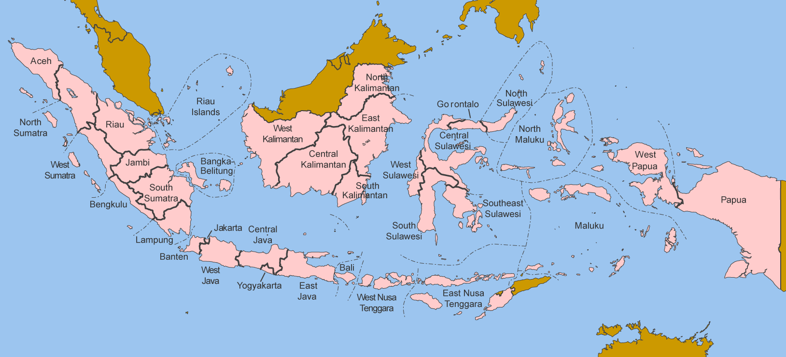

Indonesia
The first application of FEO Global is the development of an openly available electricity systems model for Indonesia. This model is used to explore transition pathways to a net-zero electricity system. As with all energy system models, the inputs include a range of datasets and assumptions (e.g. technology cost projections, discount rates). All of these inputs are described here in order to allow for the model to be reviewed, re-run, and re-purposed.
Model scope
The model aims to represent the electricity system of Indonesia as accurately as possible, subject to constraints on data and computation time. The main aspects that improve the accuracy of the model's representation of Indonesia's electricity system are its spatial and temporal resolution.
Spatial resolution
The model represents all 34 provinces of Indonesia across 7 regions - shown in the table and map below - as individual nodes.

Indonesia provinces represented individually in FEO
| Region | Province | Province (English) | Model code |
|---|---|---|---|
| Jawa | Banten | Banten | IDNBT |
| Jawa | Jakarta Raya | Jakarta | IDNJK |
| Jawa | Jawa Barat | West Java | IDNJB |
| Jawa | Jawa Tengah | Central Java | IDNJT |
| Jawa | Jawa Timur | East Java | IDNJI |
| Jawa | Yogyakarta | Yogyakarta | IDNYO |
| Kalimantan | Kalimantan Barat | West Kalimantan | IDNKB |
| Kalimantan | Kalimantan Selatan | South Kalimantan | IDNKS |
| Kalimantan | Kalimantan Tengah | Central Kalimantan | IDNKT |
| Kalimantan | Kalimantan Timur | East Kalimantan | IDNKI |
| Kalimantan | Kalimantan Utara | North Kalimantan | IDNKU |
| Maluku | Maluku | Maluku | IDNMA |
| Maluku | Maluku Utara | North Maluku | IDNMU |
| Nusa Tenggara | Bali | Bali | IDNBA |
| Nusa Tenggara | Nusa Tenggara Barat | West Nusa Tenggara | IDNNB |
| Nusa Tenggara | Nusa Tenggara Timur | East Nusa Tenggara | IDNNT |
| Papua | Papua | Papua | IDNPA |
| Papua | Papua Barat | West Papua | IDNPB |
| Sulawesi | Gorontalo | Gorontalo | IDNGO |
| Sulawesi | Sulawesi Selatan | South Sulawesi | IDNSN |
| Sulawesi | Sulawesi Tengah | Central Sulawesi | IDNST |
| Sulawesi | Sulawesi Tenggara | Southeast Sulawesi | IDNSG |
| Sulawesi | Sulawesi Utara | North Sulawesi | IDNSA |
| Sulawesi | Sulawesi Barat | West Sulawesi | IDNSR |
| Sumatera | Aceh | Aceh | IDNAC |
| Sumatera | Bengkulu | Bengkulu | IDNBE |
| Sumatera | Jambi | Jambi | IDNJA |
| Sumatera | Kepulauan Bangka Belitung | Bangka-Belitung | IDNBB |
| Sumatera | Kepulauan Riau | Riau Islands | IDNKR |
| Sumatera | Lampung | Lampung | IDNLA |
| Sumatera | Riau | Riau | IDNRI |
| Sumatera | Sumatera Barat | West Sumatra | IDNSB |
| Sumatera | Sumatera Selatan | South Sumatra | IDNSS |
| Sumatera | Sumatera Utara | North Sumatra | IDNSU |
Temporal resolution
Each year is divided into 2 'Seasons' [S1-S6]:
| Season | Months |
|---|---|
| S1 | Jan, Feb, Mar, Oct, Nov, Dec |
| S2 | Apr, May, Jun, Jul, Aug, Sep |
Each 'Season' is further divided into 6 'Daily Time Brackets':
| Daily time bracket | Hours of the day |
|---|---|
| D1 | 0, 4 |
| D2 | 4, 8 |
| D3 | 8, 12 |
| D4 | 12, 16 |
| D5 | 16, 20 |
| D6 | 20, 24 |
Together, there are 12 representative 'timeslices' in the model. The temporal resolution is the same for the entire model period.
Model horizon
Base year - 2021
End year - 2050
Key assumptions
Discount rates
The model includes two types of discount rates (DR): 'social' and 'financial'. The social DR is applied across the entire model and represents the relative weighting of present and future costs and benefits. A low social DR weights the present and the future more similarly than a high DR. The financial DR is technology-specific and represents the weighted average cost of capital (WACC) for a given technology (e.g. power plant). The model assumes a value of 10% for both the social and financial discount rates. The latter is based on the IEA Cost of Capital Observatory.
Reserve Margin
The Reserve margin decreases from the current level of 60% to 35% by 2030, based on RUPTL 2021-2030.
Data
Below is a summary of all the input data used in the model.
Technology costs
Battery costs from NREL. All other costs from OSeMOSYS Global and PLEXOS World.
Technology cost projections (Capital)
| Technology | Unit | 2021 | 2030 | 2040 | 2050 |
|---|---|---|---|---|---|
| Battery storage | USD2020/kWh | 330 | 198 | 173 | 149 |
| Biomass | USD2020/kWh | 2000 | 1820 | 1710 | 1710 |
| Gas - Combined Cycle (CCGT) | USD2020/kWh | 690 | 660 | 635 | 635 |
| Coal - CCS | USD2020/kWh | 3115 | 3115 | 2925 | 2925 |
| Coal | USD2020/kWh | 1520 | 1480 | 14567 | 1457 |
| Geothermal | USD2020/kWh | 4000 | 3440 | 3140 | 3140 |
| Hydro | USD2020/kWh | 2080 | 2000 | 1925 | 1925 |
| Gas - Open Cycle (OCGT) | USD2020/kWh | 770 | 730 | 705 | 705 |
| Solar Photovoltaic | USD2020/kWh | 790 | 560 | 485 | 485 |
| Nuclear | USD2020/kWh | 4200 | 4000 | 4000 | 4000 |
| Waste | USD2020/kWh | 2000 | 1820 | 1710 | 1710 |
| Wave | USD2020/kWh | 5500 | 5100 | 5100 | 5100 |
| Wind - Offshore | USD2020/kWh | 3500 | 2980 | 2750 | 2750 |
| Wind - Onshore | USD2020/kWh | 1500 | 1280 | 1180 | 1180 |
Renewable Energy Profiles
Hourly renewable energy profiles for wind (onshore and offshore) and solar PV in each province were obtained from renewables.ninja. Data for 2020 was used.
Renewable Energy Potentials
Data on renewable energy potentials by province was obtained from multiple sources:
- Geothermal: 'Volcanostratigraphy of Batukuwung-Parakasak Geothermal Area, Serang Regency, West Java', U. Sumotarto, 2019
- Solar PV: 'Beyond 443 GW - Indonesia's Infinite Renewable Energy Potentials', IESR, 2021
- Wind: 'Beyond 443 GW - Indonesia's Infinite Renewable Energy Potentials', IESR, 2021
- Biomass: 'Beyond 443 GW - Indonesia's Infinite Renewable Energy Potentials', IESR, 2021
- Hydropower: International Hydropower Association, 2019
Renewable energy potentials by province
| Province (English) | Region | Solar PV potential | Hydropower potential | Wind power potential | Biomass potential | Geothermal potential |
|---|---|---|---|---|---|---|
| Banten | Jawa | 12 | 0.1 | 0 | 0.3 | 0.6 |
| Jawa Tengah | Jawa | 54.2 | 1.3 | 0.2 | 0.1 | 1.8 |
| Jawa Timur | Jawa | 66.7 | 1.3 | 0.2 | 0.2 | 1.2 |
| Jakarta Raya | Jawa | 6 | 0 | 0 | 0 | 0 |
| Jawa Barat | Jawa | 40.9 | 1.5 | 0.4 | 0.4 | 6.6 |
| Yogyakarta | Jawa | 7.4 | 0.1 | 0 | 0 | 0 |
| Kalimantan Tengah | Kalimantan | 586.5 | 2.5 | 0 | 3.8 | 0 |
| Kalimantan Timur | Kalimantan | 1100.7 | 6.6 | 0 | 2.4 | 0 |
| Kalimantan Utara | Kalimantan | 135.6 | 5 | 0 | 0.6 | 0 |
| Kalimantan Selatan | Kalimantan | 193.8 | 0.9 | 0.1 | 0.9 | 0 |
| Kalimantan Barat | Kalimantan | 983.5 | 6.5 | 0 | 3 | 0.1 |
| Maluku | Maluku | 196.6 | 0.6 | 4.9 | 0.1 | 0.2 |
| Maluku Utara | Maluku | 81.1 | 0.2 | 0 | 0 | 0.2 |
| Bali | Nusa Tenggara | 11.6 | 0.1 | 0 | 0 | 0 |
| Nusa Tenggara Timur | Nusa Tenggara | 312.5 | 0.2 | 5.9 | 0.1 | 1 |
| Nusa Tenggara Barat | Nusa Tenggara | 40.6 | 0 | 0 | 0.1 | 0.1 |
| Papua | Papua | 571.5 | 20 | 0.2 | 0.4 | 0 |
| Papua Barat | Papua | 149.6 | 2.4 | 0 | 0.1 | 0 |
| Sulawesi Tengah | Sulawesi | 156.7 | 4.6 | 0 | 0.1 | 0.4 |
| Gorontalo | Sulawesi | 12 | 1 | 0 | 0 | 0 |
| Sulawesi Utara | Sulawesi | 14 | 0 | 0 | 0 | 0.9 |
| Sulawesi Selatan | Sulawesi | 86.1 | 2.6 | 6.5 | 0.1 | 0.3 |
| Sulawesi Tenggara | Sulawesi | 195.3 | 1.1 | 0 | 0.1 | 0.3 |
| Sulawesi Barat | Sulawesi | 22.3 | 0.9 | 0 | 0.1 | 0 |
| Aceh | Sumatera | 175.9 | 4.7 | 1.2 | 0.9 | 1.3 |
| Kepulauan Bangka Belitung | Sumatera | 209.1 | 0 | 0 | 0.2 | 0 |
| Bengkulu | Sumatera | 55.7 | 0.9 | 0 | 0.4 | 0 |
| Jambi | Sumatera | 249.5 | 0.7 | 0 | 2.1 | 1 |
| Lampung | Sumatera | 65 | 0.5 | 0 | 1.6 | 2.9 |
| Sumatera Utara | Sumatera | 213.1 | 5 | 0 | 1.4 | 3.6 |
| Riau | Sumatera | 261.5 | 0.1 | 0 | 4.7 | 0 |
| Kepulauan Riau | Sumatera | 20.5 | 0 | 0 | 0.7 | 0 |
| Sumatera Selatan | Sumatera | 389.5 | 1 | 0 | 5 | 1.9 |
| Sumatera Barat | Sumatera | 72.8 | 2.9 | 0 | 1 | 1.6 |
Electricity demand projections
Electricity demands for all 34 provinces, current and projected, are inputs to the model. Electricity demand by province for 2021 is obtained from the RUPTL 2021-2030. The methodology used to project these demands between 2021-2050 is detailed here and summarised below.
Electricity demand projections (GWh)
| Province | Model code | 2021 | 2025 | 2030 | 2040 | 2050 |
|---|---|---|---|---|---|---|
| Banten | IDNBT | 23831 | 27125 | 31314 | 41882 | 56285 |
| Jawa Barat | IDNJB | 53318 | 55595 | 58492 | 65137 | 72835 |
| Jawa Timur | IDNJI | 39457 | 41847 | 44887 | 51966 | 60358 |
| Jakarta Raya | IDNJK | 32709 | 56416 | 86572 | 192336 | 449512 |
| Jawa Tengah | IDNJT | 26661 | 26954 | 27327 | 28133 | 28964 |
| Yogyakarta | IDNYO | 3108 | 8022 | 14272 | 38962 | 110752 |
| Kalimantan Barat | IDNKB | 2913 | 4156 | 5900 | 9907 | 17475 |
| Kalimantan Timur | IDNKI | 4049 | 5840 | 8350 | 14305 | 26073 |
| Kalimantan Selatan | IDNKS | 3051 | 4413 | 6323 | 10866 | 19868 |
| Kalimantan Tengah | IDNKT | 1598 | 2254 | 3175 | 5220 | 8792 |
| Kalimantan Utara | IDNKU | 238 | 350 | 508 | 861 | 1485 |
| Maluku | IDNMA | 583 | 938 | 1300 | 2288 | 4145 |
| Maluku Utara | IDNMU | 637 | 1004 | 1380 | 2390 | 4263 |
| Bali | IDNBA | 4708 | 4896 | 5136 | 5716 | 6479 |
| Nusa Tenggara Barat | IDNNB | 2290 | 3623 | 4984 | 8592 | 15040 |
| Nusa Tenggara Timur | IDNNT | 1160 | 1843 | 2541 | 4451 | 8131 |
| Papua | IDNPA | 1238 | 1960 | 2699 | 4687 | 8373 |
| Papua Barat | IDNPB | 583 | 932 | 1288 | 2312 | 4460 |
| Gorontalo | IDNGO | 639 | 793 | 1025 | 1704 | 2857 |
| Sulawesi Utara | IDNSA | 1940 | 2446 | 3206 | 5454 | 9344 |
| Sulawesi Tenggara | IDNSG | 6598 | 8285 | 10822 | 18315 | 31268 |
| Sulawesi Selatan | IDNSN | 1354 | 1679 | 2168 | 3612 | 6117 |
| Sulawesi Tengah | IDNST | 1150 | 1430 | 1851 | 3264 | 6415 |
| Aceh | IDNAC | 3074 | 4284 | 5676 | 9738 | 16847 |
| Kepulauan Bangka Belitung | IDNBB | 1369 | 1877 | 2460 | 4179 | 7246 |
| Bengkulu | IDNBE | 1059 | 1474 | 1952 | 3371 | 5959 |
| Jambi | IDNJA | 2112 | 2952 | 3919 | 6744 | 11700 |
| Kepulauan Riau | IDNKR | 3479 | 4934 | 6608 | 13141 | 27719 |
| Lampung | IDNLA | 5177 | 7215 | 9559 | 16361 | 28107 |
| Riau | IDNRI | 6108 | 8130 | 10454 | 17263 | 29251 |
| Sumatera Barat | IDNSB | 3646 | 5145 | 6868 | 11909 | 20720 |
| Sumatera Selatan | IDNSS | 5594 | 7879 | 10507 | 18177 | 31532 |
| Sumatera Utara | IDNSU | 11748 | 16509 | 21983 | 38639 | 70244 |
| Sulawesi Barat | IDNSR | 439 | 547 | 709 | 1181 | 1973 |
Fuel Prices
Fuel price projections
| Fuel | Unit | 2021 | 2030 | 2040 | 2050 |
|---|---|---|---|---|---|
| Coal | USD\ :sub:2020\/mt |
60.8 | 70 | 70 | 70 |
| Natural gas | USD\ :sub:2020\/mmbtu |
6 | 6 | 6 | 6 |
| Oil | USD\ :sub:2020\/bbl |
42.3 | 100 | 100 | 100 |